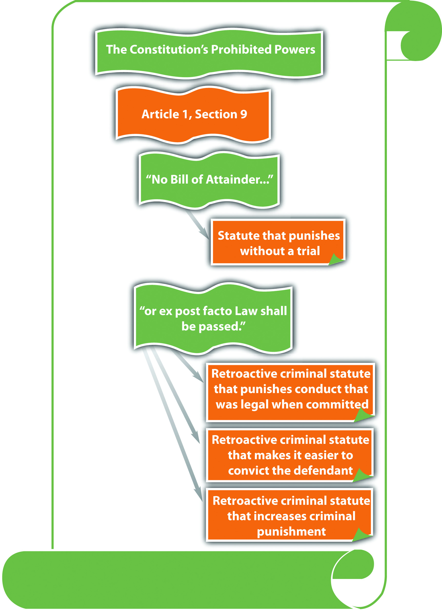

In addition to statutory and common-law defenses, a criminal defendant has extensive protections that are set forth in the United States Constitution. As stated earlier in this book, the federal Constitution is applicable in all criminal cases because the government is prosecuting. State constitutions typically mirror the federal Constitution because it sets the minimum standard of protection that is guaranteed to all citizens. States can and often do provide more constitutional protections to criminal defendants than the federal Constitution, as long as those state protections do not violate notions of federal supremacy. In this chapter, the federal Constitution is analyzed with reference to state constitutional protections when relevant.
Generally, two types of constitutional protections exist. First, a defendant can challenge the constitutionality of a criminal statute or ordinance (from this point forward, the term statute includes ordinances unless otherwise noted). Recall from Chapter 1 "Introduction to Criminal Law" that these codified laws cannot conflict with or attempt to supersede the Constitution. An attack on the constitutionality of a statute can be a claim that the statute is unconstitutional on its faceThe wording of a statute is unconstitutional., is unconstitutional as appliedThe enforcement of a statute is unconstitutional., or both. A statute is unconstitutional on its face when its wording is unconstitutional. A statute is unconstitutional as applied when its enforcement is unconstitutional. The difference between the two is significant. If a statute is unconstitutional on its face, it is invalid under any circumstances. If the statute is unconstitutional as applied, it is only unconstitutional under certain circumstances.
A second type of constitutional protection is procedural. The defendant can protest an unconstitutional procedure that occurs during prosecution. Procedure during prosecution includes, but is not limited to, arrest, interrogation, search, filing of charges, trial, and appeal. The defendant can make a motion to dismiss the charges, suppress evidence, or declare a mistrial. The defendant can also appeal and seek to reverse a conviction, among other remedies.
This book concentrates on criminal law rather than criminal procedure, so the bulk of this chapter is devoted to unconstitutional criminal statutes, rather than unconstitutional procedures. The exception is the right to a jury trial, which is discussed shortly.
Bill is on trial for obstructing a public sidewalk. Bill was arrested for standing in front of a restaurant’s entrance with a sign stating “will eat any and all leftovers.” The city ordinance Bill violated makes it a misdemeanor to “stand or sit on a public sidewalk with a sign.” To save money, the judge presiding over Bill’s trial declares that Bill will have a bench trial, rather than a jury trial. In this example, Bill can constitutionally attack the city ordinance for violating his freedom of speech because it prohibits holding a sign. The city ordinance appears unconstitutional on its face and as applied to Bill. Bill can also constitutionally attack his bench trial because he has the right to a jury trial. He could do this by making a motion to declare a mistrial, by petitioning an appellate court to halt the trial, or by appeal after a judgment of conviction.
Figure 3.1 Constitutional Protections
As stated previously in this book, courts review statutes to ensure that they conform to the Constitution pursuant to their power of judicial review. Courts generally use different standards of review when constitutional protections are at stake. Typically, a court balances the government’s interest in regulating certain conduct against an individual’s interest in a constitutionally protected right. This balancing of interests varies depending on the right at stake. If a constitutional right is fundamental, the court uses strict scrutinyA standard of judicial review used when a statute encroaches on a fundamental constitutional right; the statute is unconstitutional unless it is supported by a compelling government interest and uses the least restrictive means. to analyze the statute at issue. A statute that violates or inhibits fundamental constitutional protections is presumptively invalid and can be upheld only if it uses the least restrictive means possible. The government also must prove the statute is supported by a compelling government interest. When the challenge is based on discrimination under the equal protection clause, the court may use a lower standard, called the rational basis testA standard of judicial review occasionally used when analyzing a statute pursuant to the equal protection clause; the statute is unconstitutional unless it is rationally related to a legitimate government interest.. The rational basis test allows a statute to discriminate if the statute is rationally related to a legitimate government interest. Most constitutional rights are considered fundamental and trigger the strict scrutiny of the courts.
Review the example regarding Bill, who was arrested essentially for standing and holding a sign. The US Supreme Court has held that freedom of speech is a fundamental right. Thus a court reviewing the ordinance in Bill’s case will hold the ordinance presumptively invalid, unless the government can demonstrate a compelling interest in enacting it, and that it used the least restrictive means possible. The ordinance is broadly written to include all signs, and preventing individuals from holding signs does not serve a compelling government interest, so this difficult standard will probably result in the court holding the ordinance unconstitutional.
The legislative branch cannot punish defendants without a trial or enact retroactive criminal statutes pursuant to the Constitution’s prohibition against bill of attainderA statute that punishes a defendant without a trial. and ex post facto lawsA criminal statute that punishes a defendant retroactively.. Article 1, § 9, clause 3 states, in pertinent part, “No Bill of Attainder or ex post facto Law shall be passed.” The prohibition on bill of attainder and ex post facto laws is extended to the states in Article 1, § 10, clause 1: “No State shall…pass any Bill of Attainder, ex post facto Law.” Many state constitutions also prohibit ex post facto legislative action, mirroring the federal Constitution.Indiana Constitution, art. I, § 24, accessed October 4, 2010, http://www.law.indiana.edu/uslawdocs/inconst/art-1.html.
Bill of attainder is when the legislative branch of government punishes the defendant without a trial. The drafters of the Constitution wanted to ensure that criminal defendants have a full and fair adjudication of their rights before the government imposes punishment. Bill of attainder is usually accomplished by a statute that targets an individual or group of individuals for some type of government sanction. Bill of attainder protection enforces separation of powers by eliminating the ability of the legislature to impose criminal punishment without a trial conducted by the judicial branch.U.S. v. Brown, 381 U.S. 437 (1965), accessed October 2, 2010, http://supreme.justia.com/us/381/437/case.html.
Brianne is a member of the Communist party. Brianne applies for a job as a teacher at her local elementary school and is refused, based on this statute: “Members of any subversive group, including the Communist party, cannot hold public office nor teach for a public institution.” Brianne could attack this statute as a bill of attainder. Its provisions, targeting members of the Communist party or any other subversive group, punish by eliminating career opportunities. The members targeted are punished without a trial or any adjudication of their rights. Thus this statute allows the legislature to impose a sanction without a trial in violation of the Constitution’s prohibited powers.
An ex post facto law punishes an individual retroactively, and severely encroaches on notions of fairness. There are three types of ex post facto laws. First, a law is ex post facto if it punishes behavior that occurred before the law was in effect. Second, ex post facto laws may increase the punishment for the offense after the crime occurred. Third, a law can be ex post facto if it increases the possibility of conviction after the crime occurred.
A state murder statute defines murder as the killing of a human being, born alive. The state legislature amends this statute to include the killing of a fetus, with the exception of abortion. The amendment extends the application of the statute to all criminal fetus killings that occurred before the statute was changed. This language punishes defendants for behavior that was legal when committed. If the state attempts to include this language, a court can strike the statute for violating the prohibition against ex post facto laws.
In the preceding example about amending the murder statute, the state also amends the statute to increase the penalty for murder to the death penalty. Before the amendment, the penalty for murder was life in prison without the possibility of parole. The state cannot give the death penalty to defendants who committed murder before the statute was amended. This is considered ex post facto because it increases the punishment for the offense after the crime is committed.
In the preceding example, the state amends the murder statute to remove the statute of limitationsA statute that limits the time period for a prosecution., which is the time limit on prosecution. Before the amendment, the statute of limitations was fifty years. The state cannot prosecute defendants who committed murder more than fifty years ago, pursuant to the amendment. This is considered ex post facto because it increases the chance of conviction after the crime is committed.
Changes that benefit a criminal defendant are not considered ex post facto and may be applied retroactively. In the preceding example, if the state amended the murder statute to shorten the statute of limitations, this change actually benefits defendants by making it more difficult to convict them. Thus this amendment would be constitutional.
Ex post facto protection applies only to criminal laws. Laws that raise fees or taxes after payment are civil rather than criminal in nature. Thus these retroactive increases do not exceed governmental authority and are constitutional.
Figure 3.2 The Constitution’s Prohibited Powers
Answer the following questions. Check your answers using the answer key at the end of the chapter.